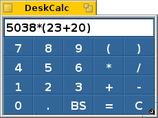

日本語
日本語 Français
Français Deutsch
Deutsch Italiano
Italiano Русский
Русский Español
Español Svenska
Svenska Українська
Українська 中文 ［中文］
中文 ［中文］ Português
Português Suomi
Suomi Slovenčina
Slovenčina English
English DeskCalc
DeskCalc
| Deskbar メニュー： | ||
| 場所： | /boot/system/apps/DeskCalc | |
| 設定ファイル： | ~/config/settings/DeskCalc_settings |
DeskCalc はシンプルな電卓ですが、一目見ただけではそうとは見えないようないくつかの素晴らしい機能を備えています。
DeskCalc はそのシンプルなキーパッドに表示されている以上のいろいろな数式を理解します。
演算子 +、-、*、/、%、^、および 定数 pi と e に加えて、次の関数がサポートされています。
acos、asin、atan、atan2、ceil、cos、cosh、exp、floor、log、log10、pow、sin、sinh、sqrt、tan、tanh、ユーザ入力に関して、DeskCalc はかなりの柔軟性があります。
/、:、\ はすべて除算演算子として解釈されます。
*、x は乗算の有効な記号です。
また、. と , は両方とも小数点とみなされることに注意してください。つまり、これらを 1000 の区切りとして使用できないことを意味します。.右クリックでこれらのオプションがあります。
DeskCalc が起動する時、自動的に Numlock をオンにします。 DeskCalc が選択されていない時、キーパッドを隠します。 必要な大きさまでリサイズできます。そして、右下のシンボルをドラッグアンドドロップすることで Replicant として、デスクトップ上に置くことができます。Deskbar の が有効になっていることを確認してください。
キーパッドは任意のカラーウェルからドラッグアンドドロップで色を付けることができます。たとえば、Icon-O-Matic から。
↑ キーと ↓ キーを使って、過去の計算履歴を行き来できます。
DeskCalc の内容を選択して、任意のアプリケーションにドラッグアンドドロップできます。または、Tracker ウインドウやデスクトップにドロップして、そこにクリップしておいたテキストを作ることができます。
さらに、その逆もまた可能です。
計算のいろいろな段階を記述した切りぬきを作っておけば、DeskCalc にドラッグアンドドロップすることでそれらに戻ることができます。
または、計算を電子メールから直接 DeskCalc にドラッグアンドドロップできます。DeskCalc は Terminal 中でも使用できます。次のように、式をダブルクオートで囲むだけです。
~> DeskCalc "sin(45)*(cos(12)+3.45)" 3.6536554673202546181795194727005826674359494735820338441084848